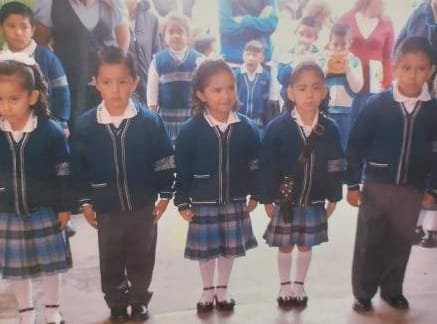
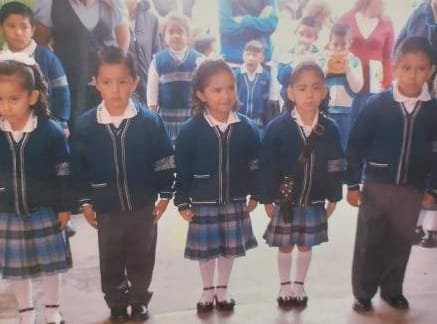

A Aline la conocí desde que éramos chiquitas, íbamos juntas en el kinder y después en la primaria.
Siempre estuvo para mí, pasamos muchísimos momentos juntas, aunque a veces peleábamos, podíamos perdón y volvíamos a hablar y ser amigas.
Cuando empezó la pandemia íbamos en quinto de primaria, de ahí solo la e visto como dos veces, la extraño mucho, pero aunque no nos veamos o dejemos de hablar por un tiempo, cuando lo volvemos a hacer se siente como si no hubiera pasado el tiempo, la quiero demasiado y es muy importante para mí.
 
